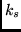

Next: The subroutine WWLS1
Up: SAI_SQLS1
Previous: The subroutine AWP1LS
This subroutine determines the value of the matrix elements:
The structure of the routine WAP1LS is the same as that of AWP1LS.
The subroutine has the formal arguments:
- IK is the array I for the bra function.
- BK is the array B for the bra function.
- ID is the array I for the ket function.
- BD is the array B for the ket function.
- K1 is the rank
 .
.
- K2 is the rank
 .
.
- K3 is the rank
 .
.
- BK4 is the rank .
- QM1, QM2 and QM3 are the quasispin projections in (38).
- WA is the value of the reduced matrix element (38) which is returned by the subroutine.
2001-12-07